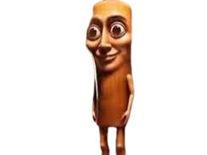
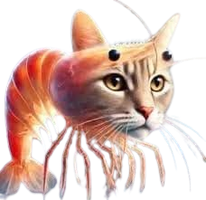
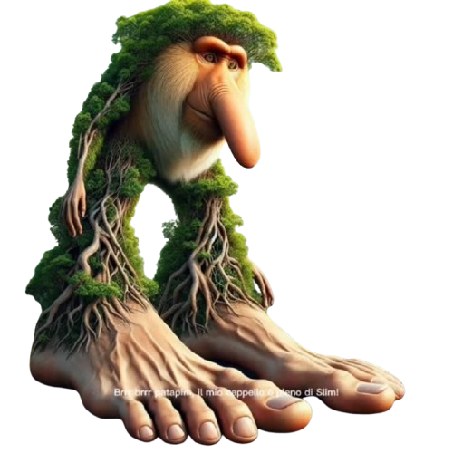

Tung Tung Tung Sahur is a traditional call heard during the early morning hours of Ramadan in many Muslim-majority countries, especially in Southeast Asia like Indonesia and Malaysia.
Tralalero Tralala is a playful, nonsensical phrase often used in songs, chants, or children's rhymes to add rhythm, cheerfulness, or a whimsical touch.
Tripi Tropi is a playful, rhythmic phrase that sounds like the pitter-patter of footsteps or raindrops. It’s often used in children’s songs, games, or storytelling to evoke a light, bouncy, or adventurous mood.
Brr Brr Patapim is a quirky, energetic phrase often used to mimic sudden action, magic bursts, or dramatic entrances—think sound effects for a spell being cast, an explosion, or a surprise twist.
